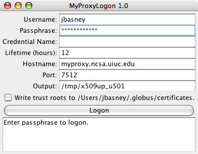

 The MyProxyLogon Java client provides a simple graphical interface for retrieving credentials from MyProxy. The client saves its configuration in ~/.MyProxyLogon for the next time it is run. Note that this version requires Java 1.7.
The MyProxyLogon source is available. It uses a simple MyProxyLogon API. Use the myproxy-logon Maven package to integrate the MyProxyLogon API into your application.
Your comments are welcome. Please join the discussions on the mailing lists.
See also: